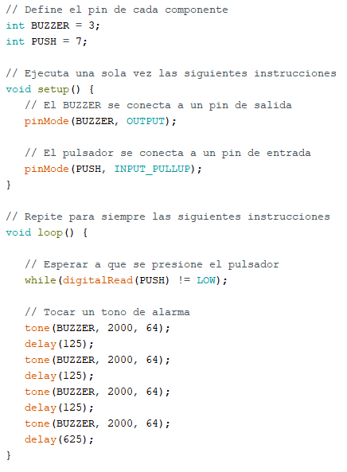

6. Zumbador¶
Monta en protoboard el siguiente esquema eléctrico.


Circuito eléctrico en formato Fritzing
Ejercicios¶
Sube a la placa Arduino UNO el siguiente programa. Al presionar el pulsador, en el zumbador sonará la alarma de un despertador.
Sube a la placa Arduino UNO el siguiente programa. Al presionar el pulsador, en el zumbador sonará la canción de cumpleaños feliz.
1 2 3 4 5 6 7 8 9 10 11 12 13 14 15 16 17 18 19 20 21 22 23 24 25 26 27 28 29 30 31 32 33 34 35 36 37 38 39 40 41 42 43 44 45 46 47 48 49 50 51 52 53 54 55 56 57 58 59 60 61 62 63 64 65 66 67 68 69 70 71 72 73 74 75 76 77 78 79 80 81 82 83 84 85 86 87 88 89 90 91 92 93 94 95 96 97 98 99 100 101 102 103 104 105 106 107
// Definición de la frecuencia de las notas musicales // S al final significa nota sostenida. #define NOTE_DO4 262 #define NOTE_DO4S 277 #define NOTE_RE4 294 #define NOTE_RE4S 311 #define NOTE_MI4 330 #define NOTE_FA4 349 #define NOTE_FA4S 370 #define NOTE_SOL4 392 #define NOTE_SOL4S 415 #define NOTE_LA4 440 #define NOTE_LA4S 466 #define NOTE_SI4 494 #define NOTE_DO5 523 #define NOTE_DO5S 554 #define NOTE_RE5 587 #define NOTE_RE5S 622 #define NOTE_MI5 659 #define NOTE_FA5 698 #define NOTE_FA5S 740 #define NOTE_SOL5 784 #define NOTE_SOL5S 831 #define NOTE_LA5 880 #define NOTE_LA5S 932 #define NOTE_SI5 988 #define NOTE_DO6 1047 #define NOTE_DO6S 1109 #define NOTE_RE6 1175 #define NOTE_RE6S 1245 #define NOTE_MI6 1319 #define NOTE_FA6 1397 #define NOTE_FA6S 1480 #define NOTE_SOL6 1568 #define NOTE_SOL6S 1661 #define NOTE_LA6 1760 #define NOTE_LA6S 1865 #define NOTE_SI6 1976 // Define la melodía a tocar. // Cada línea define una nota y su tempo. // Cumpleaños feliz int melody[] = { NOTE_SOL4, 4, NOTE_SOL4, 4, NOTE_LA4, 8, NOTE_SOL4, 8, NOTE_DO5, 8, NOTE_SI4, 16, NOTE_SOL4, 4, NOTE_SOL4, 4, NOTE_LA4, 8, NOTE_SOL4, 8, NOTE_RE5, 8, NOTE_DO5, 16, NOTE_SOL4, 4, NOTE_SOL4, 4, NOTE_SOL5, 8, NOTE_MI5, 8, NOTE_DO5, 8, NOTE_SI4, 8, NOTE_LA4, 16, NOTE_FA5, 4, NOTE_FA5, 4, NOTE_MI5, 8, NOTE_DO5, 8, NOTE_RE5, 8, NOTE_DO5, 16, }; int num_notas = sizeof(melody) / (2 * sizeof(melody[0])); // Define los pines de entrada y salida int BUZZER 3 int PUSH 7 // Ejecuta una sola vez las siguientes instrucciones void setup() { // Conecta el zumbador a una salida pinMode(BUZZER, OUTPUT); // Conecta el pulsador a una entrada pinMode(PUSH, INPUT_PULLUP); } // Repite para siempre las siguientes instrucciones void loop() { // Esperar a que se presione el pulsador while (digitalRead(PUSH) == HIGH); // Tocar la melodía en el zumbador for(int nota = 0; nota < num_notas*2; nota += 2) { int nota_tono = melody[nota]; int nota_duracion = melody[nota+1]; tone(BUZZER, nota_tono, nota_duracion*50); delay(nota_duracion * 50 + 30); } delay(2000); }
Modifica el programa anterior para que suene la melodía de la cucaracha según las siguientes notas.
DO4 DO4 DO4 FA4 LA4 DO4 DO4 DO4 FA4 LA4 FA4 FA4 MI4 MI4 RE4 RE4 DO4 DO4 DO4 DO4 MI4 SOL4 DO4 DO4 DO4 MI4 SOL4 DO5 RE5 DO5 LA4S LA4 SOL4 FA4
Hay que añadir tempos y ajustarlos a cada nota.
Modifica el programa anterior con la melodía que prefieras. Puedes encontrar muchas melodías en Internet buscando el nombre de la canción y la palabra notas.